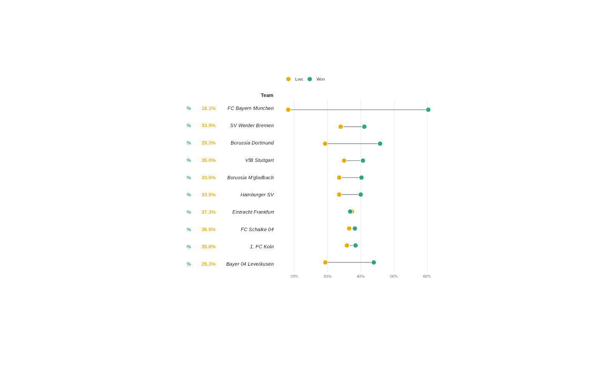

This function wraps a flextable as a patchwork-compliant patch, similar
to what patchwork::wrap_table() does for gt tables. It allows flextable
objects to be combined with ggplot2 plots in a patchwork layout, with
optional alignment of table headers and body with plot panel areas.
Note this is experimental and may change in the future.
Arguments
- x
A flextable object.
- panel
What portion of the table should be aligned with the panel region?
"body"means that header and footer will be placed outside the panel region."full"means that the whole table will be placed inside the panel region."rows"keeps all rows inside the panel but is otherwise equivalent to"body"."cols"places all columns within the panel region but keeps column headers on top.- space
How should the dimension of the table influence the final composition?
"fixed"means that the table width and height will set the dimensions of the area it occupies."free"means the table dimensions will not influence the sizing."free_x"and"free_y"allow freeing either direction.- n_row_headers
Number of leading columns to treat as row headers. These columns will be placed outside the panel region and will not participate in alignment with the plot axes.
- flex_body
If
TRUE, the table body row heights become flexible: the adjacent ggplot determines the panel height and the body rows stretch equally to fill it. Header and footer keep their fixed size. This is useful to align table rows with discrete bars or categories in a neighbouring plot. Impliesfree_yforspace.- flex_cols
If
TRUE, the data column widths (all columns aftern_row_headers) become flexible: the adjacent ggplot determines the panel width and the data columns stretch to fill it. Row header columns keep their fixed width. This is useful to align table columns with discrete x-axis categories in a neighbouring plot. Impliesfree_xforspace.- expand
Expansion value matching the ggplot discrete axis expansion (
ggplot2::expansion(add = expand)). Default is0.6, which is the ggplot2 default for discrete axes. Only used whenflex_cols = TRUE.- just
Horizontal alignment of the table within its patchwork panel. One of
"left"(default),"right", or"center". Useful when the table is narrower than the available panel width. Ignored whenflex_cols = TRUE(columns fill the panel).
Value
A patchwork-compliant object that can be combined with ggplot2 plots
using +, |, or / operators.
See also
Other flextable print function:
df_printer(),
flextable_to_rmd(),
gen_grob(),
htmltools_value(),
knit_print.flextable(),
plot.flextable(),
print.flextable(),
save_as_docx(),
save_as_html(),
save_as_image(),
save_as_pptx(),
save_as_rtf(),
to_html.flextable()
Examples
library(gdtools)
font_set_liberation()
#> Font set
#> sans: Liberation Sans [liberation]
#> serif: Liberation Serif [liberation]
#> mono: Liberation Mono [liberation]
#> symbol: Liberation Sans [liberation]
#> 4 HTML dependencies
library(ggplot2)
library(patchwork)
set_flextable_defaults(
font.family = "Liberation Sans",
font.size = 10,
big.mark = "",
border.color = "grey60"
)
# Adapted from <https://r-graph-gallery.com/web-dumbell-chart.html>
dataset <- data.frame(
team = c(
"FC Bayern Munchen", "SV Werder Bremen", "Borussia Dortmund",
"VfB Stuttgart", "Borussia M'gladbach", "Hamburger SV",
"Eintracht Frankfurt", "FC Schalke 04", "1. FC Koln",
"Bayer 04 Leverkusen"
),
matches = c(2000, 1992, 1924, 1924, 1898, 1866, 1856, 1832, 1754, 1524),
won = c(1206, 818, 881, 782, 763, 746, 683, 700, 674, 669),
lost = c( 363, 676, 563, 673, 636, 625, 693, 669, 628, 447)
)
dataset$win_pct <- dataset$won / dataset$matches * 100
dataset$loss_pct <- dataset$lost / dataset$matches * 100
dataset$team <- factor(dataset$team, levels = rev(dataset$team))
# -- dumbbell chart --
pal <- c(lost = "#EFAC00", won = "#28A87D")
df_long <- reshape(dataset, direction = "long",
varying = list(c("loss_pct", "win_pct")),
v.names = "pct", timevar = "type",
times = c("lost", "won"), idvar = "team"
)
p <- ggplot(df_long, aes(x = pct / 100, y = team)) +
stat_summary(
geom = "linerange", fun.min = "min", fun.max = "max",
linewidth = .7, color = "grey60"
) +
geom_point(aes(fill = type), size = 4, shape = 21,
stroke = .8, color = "white"
) +
scale_x_continuous(
labels = scales::percent,
expand = expansion(add = c(.02, .02))
) +
scale_y_discrete(name = NULL, guide = "none") +
scale_fill_manual(
values = pal,
labels = c(lost = "Lost", won = "Won")
) +
labs(x = NULL, fill = NULL) +
theme_minimal(base_family = "Liberation Sans", base_size = 10) +
theme(
legend.position = "top",
legend.justification = "left",
panel.grid.minor = element_blank(),
panel.grid.major.y = element_blank()
)
# -- flextable --
ft_dat <- dataset[, c("matches", "win_pct", "loss_pct", "team")]
ft_dat$team <- as.character(ft_dat$team)
ft <- flextable(ft_dat)
ft <- border_remove(ft)
ft <- bold(ft, part = "header")
ft <- colformat_double(ft, j = c("win_pct", "loss_pct"),
digits = 1, suffix = "%"
)
ft <- set_header_labels(ft,
team = "Team", matches = "GP",
win_pct = "", loss_pct = ""
)
ft <- color(ft, color = "#28A87D", j = 2)
ft <- color(ft, color = "#EFAC00", j = 3)
ft <- bold(ft, bold = TRUE, j = 2:3)
ft <- italic(ft, italic = TRUE, j = 4)
ft <- align(ft, align = "right", part = "all")
ft <- autofit(ft)
print(
wrap_flextable(ft, flex_body = TRUE, just = "right") +
p + plot_layout(widths = c(1.1, 2))
)
